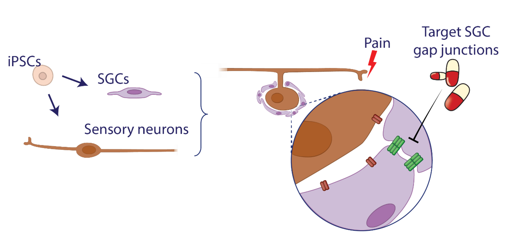
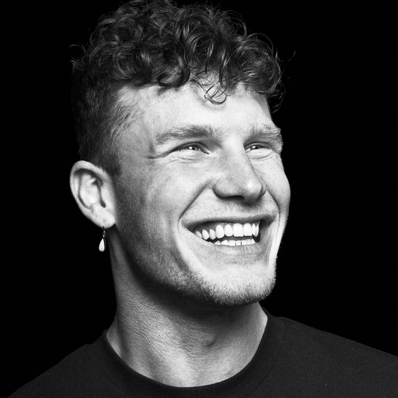
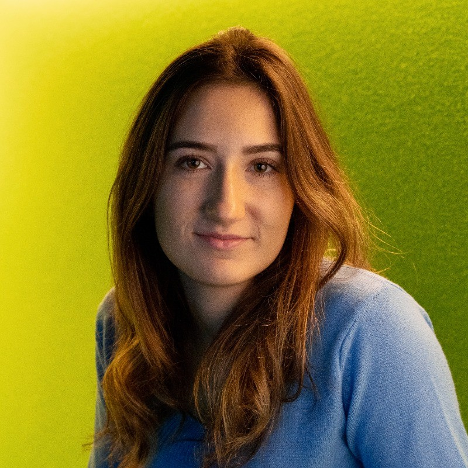

About the project
Chronic pain remains a major clinical challenge, with current treatments often lacking specificity and carrying risks of addiction. Our research focuses on the dorsal root ganglion (DRG)—a key hub in sensory signal transmission—and its satellite glial cells (SGCs), which play a crucial role in pain modulation. Despite their known involvement in chronic pain, SGC-targeted therapies have yet to be developed.
Our lab aims to bridge this gap by mapping the cellular and molecular landscape of the DRG, deciphering SGC-neuron interactions, and developing advanced stem cell and animal models for drug screening. By leveraging single-cell RNA sequencing, bioinformatics, and in vitro co-culture systems, we seek to identify novel drug targets that can selectively modulate pain at its source.
This research, funded by the Painless Foundation, lays the groundwork for non-addictive, DRG-specific pain treatments, offering new hope for individuals suffering from chronic pain.

Team Members

Joey Zuijdervelt
PhD Candidate
Joey will focus on spatial transcriptomics to map the molecular landscape of the dorsal root ganglion (DRG) in chronic pain and healthy state.
He will analyze DRG samples from various species to identify satellite glia-neuron interactions and molecular pathways involved in pain signaling. This work will contribute to building a cross-species DRG atlas, providing insights into the mechanisms underlying chronic pain.

Cecile Herbermann
Bioinformatician
Cecile will conduct computational analysis of single-cell and spatial transcriptomics datasets to build a comprehensive DRG atlas. She will map cell-cell communication networks and uncover species-specific differences in pain signaling.
This work will drive target discovery for non-addictive pain therapies and provide a foundation for experimental validation efforts.
Nina Schulten
Technician
Nina will develop an organ-on-a-chip model to recreate DRG interactions in vitro. Using iPSC-derived sensory neurons and satellite glial cells, she will establish co-culture systems that mimic the in vivo microenvironment.
This model will serve as a platform for functional studies and phenotypic drug screening, enabling targeted investigation of pain mechanisms and potential therapeutic interventions.